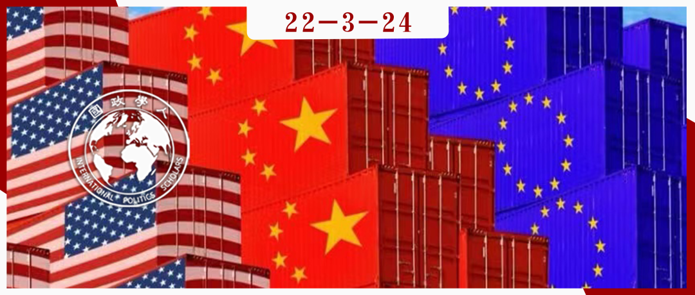

收录于合集

“流氓领导”：
美国攻击自由贸易秩序之际的领导力转移
作者： Kristen Hopewell，英属哥伦比亚大学公共政策和全球事务学院全球政策加拿大讲席教授，威尔逊国际学者中心的威尔逊中国研究员。主要研究领域包括国际贸易、全球治理、产业政策和发展，重点关注新兴大国。
编译： 何伊楠（国政学人编译员，中国政法大学国际政治专业硕士研究生）
来源： Kristen Hopewell. (2021). When the hegemon goes rogue: leadership amid the US assault on the liberal trading order, International Affairs , 97 (4), 1025-1043, doi:10.1093/ia/iiab073.

导读
历史上，美国霸权领导自由国际经济秩序，对其建立和维护起到重要作用。本文从霸权稳定论出发，基于二十世纪七、八十年代美国霸权出现衰落迹象之际国际关系学者们对以“非霸权合作”维持国际秩序的可能性的辩论，探讨进入21世纪，美国放弃领导自由国际贸易秩序并对其一再攻击的背景下，其他较大经济体是否有意愿和能力引领维持体系的倡议。
作者指出，对当前国际贸易体系构成最直接和最严重威胁的是美国阻止了全球贸易实际上的最高法院——上诉机构的成员任命，使世界贸易组织（WTO，以下简称“世贸组织”）的争端解决机制面临危险。按照本文的定义，多边谈判中发挥领导力意味着“在一段时间内，一个行为体引导或指导其他行为体的行为朝着某个目标前进的一种不对称的关系。”一方面，领导者要有制定具体的倡议、动员其他国家支持，并建立联盟来推进倡议朝其愿景前进的能力；另一方面，要有追随者支持。基于这一标准，作者认为，尽管国际普遍关注中国崛起，但在世贸组织中承担起领导责任的是欧盟而非中国。欧盟领导创建了世界上大多数主要贸易大国和世贸组织争端解决机制的使用国参与的多方临时上诉仲裁安排（MPIA），尽管这是应对上诉机构瘫痪状态的权宜之计，但代表了试图引领并维护国际贸易体系的关键一步。
一方面，本文体现了国际社会主要经济体仍然重视世界贸易组织和多边贸易体制等推动贸易自由化的国际经济制度安排；另一方面，尽管本文从欧盟的立场出发，肯定欧盟引领创设的MPIA对维护自由贸易秩序的意义，但对MPIA并非永久性解决方案的强调暗示了当前自由贸易秩序仍不稳定。所有这些指向了一些基本问题：多边贸易体制的制度能力边界在何？是否要一直维护？如果是，又如何参与和维护？
编译
01
当霸权国破坏既定秩序时，会发生什么?
历史上，美国霸权对自由秩序的建立和维护起到至关重要的作用。霸权稳定论认为，一个开放的、以规则为基础的多边贸易体系需要一个霸权领导者支持。然而， 自20世纪70年代和80年代以来美国霸权出现衰落迹象之际，国际关系学者们一直在辩论以“非霸权合作”（non-hegemonic cooperation）维持国际秩序的可能性 。美国相对实力有所下降之际，业已建立的治理机制的持续性带来了一个问题，即制度合作能否经受住霸权国的衰落而长久存续。学者们试图了解，在没有霸权的情况下，各国是否能够合作来维持和加强秩序。在何种条件下，非霸权合作是可行和有效的？没有美国的领导，哪些因素可以使非霸权合作成为可能？这些问题引起了相当大关注。学者们确定的关键条件之一是：是否有可替代的领导者。
美国近期政策对自由主义国际经济秩序（liberal international economic order, LIEO）构成威胁， 这使得其他大国是否有意愿和能力引领维持体系的倡议成为迫切需要解决的问题。作为世界上最大的贸易国，中国一直是全球开放贸易秩序的主要受益者，对维持既有秩序有较大利益考量。在特朗普就职的三天前，中国领导人在2017年达沃斯世界经济论坛上发表了捍卫经济全球化和自由贸易的讲话。这一讲话登上国际媒体的头条，并被广泛视为中国有意填补美国领导力缺失空白的信号。贸易学者克里斯蒂娜·戴维斯（Christina Davis）在《金融时报》（ Financial Times ）上撰文称，“该轮到中国拯救全球贸易体系了。”
相比之下，许多人对欧盟在这场危机中的领导力持怀疑态度。从欧债危机到英国退欧，欧盟不断受到内部威胁的困扰，内部分歧和挑战阻碍了它发挥领导力的潜力。此外，欧盟过去的业绩表现，以及相对于其经济和政治影响力在国际舞台上表现普遍不佳，加剧了人们对欧盟领导潜力的怀疑。
02
欧盟：领导力滞后？
鉴于其规模和经济重要性，欧盟无疑是国际贸易体系中的一个主要角色。 但经济实力并不一定转化为领导力。 领导力与影响力并不同步，它不仅仅指提出或破坏决议。相反，在多边谈判中发挥领导力意味着“在一段时间内，行为体引导或指导其他行为体的行为朝着某个目标前进的一种不对称的关系。” 一个领导者必须有远见，提出具体的倡议，动员其他国家的支持，建立联盟来推进自己的倡议并推动谈判朝着自己的愿景前进。 最重要的是，“成功的领导力不仅取决于资源和目标， 还取决于追随者的支持 。”
按照这一标准，欧盟在世贸组织的表现普遍不佳。由于缺乏公认的正当性同时内部协调存在问题，欧盟领导潜力已被削弱。在多哈回合谈判（Doha Round）期间，欧盟试图在全球贸易发展议程中发挥领导作用，然而因自身缺乏信誉且无法获得追随者而失败。欧盟自称“发展的捍卫者”，却与其保护主义政策和对发展中国家贸易采取的高压策略相矛盾。
欧盟的独特性质也阻碍了其领导雄心。欧盟拥有代表其成员国行动的独特能力，意味着它有权参与和缔结国际协议谈判，并在世贸组织中以一致立场发声。然而，欧盟经常被形容为一个“自相矛盾的贸易大国”。成员国之间往往在贸易政策上存在分歧，难以达成一致的谈判立场。这种内部分歧削弱了欧盟在世贸组织中的领导力。
03
WTO上诉机构危机
世贸组织面临最紧迫的威胁，或许是由美国通过阻止对上诉机构（the Appellate Body）成员的任命，导致的世贸组织争端解决机制（dispute settlement mechanism, DSM）失效。 上诉机构审理关于世贸组织争端解决专家组（WTO dispute settlement panels）决议的上诉，因此是争端解决体系的重要组成部分。自其成立以来，超过2/3的世贸组织争端已被上诉并送达上诉机构。然而，随着2017年中期上诉机构法官（被称为上诉机构“成员”）的任期到期，美国开始阻止上诉机构的所有新任命。上诉机构共有7个席位，需要至少3名法官组成一个专家组来裁决争端。自2019年12月以来，上诉机构的7个席位中有6个空缺，没有足够的法官来裁决争端；而自2020年12月以来，所有7个席位都是空缺的。 美国通过阻止上诉机构成员的任命，危及到世贸组织解决争端的整个机制：如果提出上诉，争端解决小组的决议将被阻止且不具有法律约束力，直到上诉机构做出决议。 因此，上诉机构无法受理案件的情况下，在争端中被否决的成员只需提出上诉，就可以阻止争端解决专家决议的通过。这就是所谓的“进入真空”（‘into the void’）。
“归零法”（zeroing）作为有争议的反倾销税计算方法由美国推出，作为一种阻止进口的方案。21世纪初，涉及“归零法”（zeroing）的几个案件中，上诉机构做出了不利于美国的裁决，使得美国对其颇生怨言。 在奥巴马任内，美国开始阻止上诉机构成员连任。 上诉机构成员经协商一致任命，任期四年，可连任一次。按照不成文的传统，连任通常是自动的。2011年，美国史无前例地阻止其任命的珍妮弗·希尔曼（Jennifer Hillman）连任，因为政府对她没有支持美国保护主义措施感到不满。2016年，因为不同意上诉机构做出的裁决，美国又阻止了韩国法官张胜和（Seung Wha Chang）连任。其他世贸组织成员认为美国此举严重威胁到上诉机构独立性和公正性，广泛谴责美国拒绝重新任命做出不符合美国意愿裁决的法官的行动。
在特朗普任内，美国将这种做法推上新的极端——通过阻止上诉机构的所有任命，使世贸组织的执行机制失灵。 更重要的是，美国指责上诉机构司法越权（judicial overreach），抱怨该机构对世贸组织规则的解释违背了美国的利益。美国对上诉机构涉及中国的贸易政策和美国利用贸易防御措施限制进口的能力的几项裁决表示不满，并指责上诉机构在计算反倾销税时禁止使用归零法和禁止同时征收反倾销和反补贴税的双重救济（double remedies）。它还批评上诉机构对“公共机构”（public body）定义的解释过于狭隘，将世贸组织补贴规则的适用范围限制在中国国有企业。 更深层的问题是，美国不仅对上诉机构不满，对世贸组织本身也不满 ——美国认为世贸组织未能解决中国的“国家资本主义”问题，处罚其所谓的“不公平”贸易行为，从而遏制中国崛起对美国霸权构成的威胁。美国已经表示，在其对中国贸易政策的系统性担忧得到解决之前，它对上诉机构改革几乎没有兴趣。因此，美国一直不愿就改革上诉机构提出任何建议。它甚至拒绝讨论可能的解决方案，或接受其他国家提出的建议。
其他世贸组织成员对上诉机构受阻表示“严重关切”，称这是一场具有“破坏性后果”的“令人担忧的危机”。他们已将恢复上诉机构列为“当务之急”，并一再强调“形势的紧迫性”。尽管已有121个世贸组织成员请求美国解除对上诉机构任命的阻挠，但美国表示拒绝。正如中国所总结的，上诉机构危机将导致“世贸组织争端解决体系的崩溃”，这将“从根本上摧毁多边贸易体制”。如果没有一个有效的争端解决机制，贸易体系将面临陷入“丛林法则”的风险。
04
欧盟在WTO上诉机构危机中的领导力与多方临时上诉仲裁安排（MPIA）
2018年晚些时候，为避免即将到来的上诉机构崩溃，欧盟和其他世贸组织成员推动以谈判解决僵局，提出十几个实际的改革方案以回应美国的关切。经过长时间密集磋商（被称为“沃克进程”, the Walker Process），总理事会于2019年11月就上诉机构改革达成一项决议草案，旨在解决美国提出的程序性关切，同时维护一个有效、独立、双轨的争端解决体系的基本要素。但是，美国仍拒绝达成协商一致。
在此背景下，欧盟开始努力寻找使争端解决机制在没有美国的情况下继续运作的方法。加拿大作为美、欧、日“四方会谈”（the ‘Quad’）的成员，并领导渥太华世贸组织改革小组（the Ottawa Group）进行改革，是世贸组织传统上的主要参与者。 2019年7月，欧盟与加拿大达成为世贸组织争端建立双边临时上诉仲裁安排（bilateral interim appeal arbitration arrangement）的协议。 这一安排将适用于双方之间的争端，并将“尽可能密切地复制”上诉机构的做法和程序，上诉将由世贸组织总干事选定的3名前上诉机构成员听审。2019年10月，欧盟与通过其欧洲经济区（European Economic zone）成员国身份与欧盟保持密切联系的挪威签署了第二份类似的协议。
在2020年1月的达沃斯世界经济论坛上，欧盟和其他16个国家在寻求扩大协议的基础上宣布计划就上诉贸易争端谈判一项多方临时安排。欧盟率先采取行动寻求大量国家参与，并特别针对最大的贸易国和世贸组织争端解决体系的最常参与者。 2020年3月，在欧盟领导下，各国同意通过旨在广泛复制上诉机构的做法和程序的多方临时上诉仲裁安排（multi-party interim appeal arbitration arrangement, 以下简称“MPIA”）。 在找到上诉机构危机的永久解决办法和上诉机构再次全面运作之前，该机制将持续存在。这一临时上诉安排将只适用于参与国，但对所有世贸组织成员开放。截至2020年12月，已有50多个国家同意参与。MPIA目前有除美国以外的大多数世贸组织争端解决体系的主要参与者，包括欧盟、澳大利亚、巴西、加拿大、中国和墨西哥。许多其他国家已经表示有兴趣加入MPIA，但一直在等待美国大选的结果，以及拜登政府对上诉机构任命的意向。日本、韩国和印度则没有加入。
欧盟和MPIA的其他参与者表示，他们的“明确优先事项”（clear priority）是为上诉机构危机找到一个持久的解决方案。该安排旨在反映上诉机构的实体和程序方面，它建立了一个由10名仲裁员组成的团体，以审理针对世贸组织争端解决专家组报告的上诉。与上诉机构一样，每个上诉由3名仲裁员审理，他们的决议对国家具有约束力。MPIA还引入了一些由有关各方提出的新特点，以反映欧盟对上诉机构改革的建议，并应对美国对上诉机构的批评：包括对仲裁员裁决上诉的90天期限，以及限制仲裁员只处理与解决贸易争端有关的问题。
在参与者通知世贸组织争端解决机构他们已同意10名仲裁员的任命后，MPIA于2020年8月开始运行。MPIA仲裁员有解决世贸组织争端的丰富经验：他们几乎都担任过专家组成员或仲裁员，或在协助专家组和上诉机构的世贸组织秘书处部门任职。四起世贸组织争端的当事国已经表示将根据MPIA进行谈判，以表明各国愿意使用这一机制。
引人注目的是，到2020年8月，即上诉机构停止运作仅9个月后的短时间内，欧盟领导的MPIA开始运作。欧盟成功建立了一个由志同道合的国家组成的主要联盟，以支持MPIA的启动。因为主动提出了一个其他国家渴望支持的、具体回应上诉机构危机的方案，它获得了追随者。这些国家之所以欢迎欧盟在建立多边贸易协定方面发挥的领导力，是因为欧盟的行为被视为维护世贸组织争端解决体系的持续有效性和维护全球贸易体系中的法律的关键努力。
05
中国参与MPIA：跟随欧盟的脚步
中国的经济实力使其成为MPIA的重要合作伙伴。在中国参与下，MPIA涵盖了世界上最大的三个经济体中的两个，进一步体现了美国立场的孤立。但是作者认为，中国在创建MPIA进程中只是一个跟随者，而非领导者。
与欧盟不同，中国没有积极地领导各国采取维护基于规则的贸易体系，并保护其免受美国威胁的具体措施。这与中国加入世贸组织以来，一直回避扮演领导者角色的事实一致。尽管中国对维持现有贸易秩序非常感兴趣，但目前不愿或无法在世贸组织领导维护体系的行动。作者称，中国被认为采取了具有争议性的贸易保护政策（如高额补贴、进出口限制和违反知识产权规则等），这削弱了中国的领导力。
结果是，中国缺乏作为多边主义、自由贸易和法治捍卫者的信誉，因此也不被认为是维护自由贸易秩序的令人信服的领导者。此外，中国一直是美国贸易攻击（trade aggression）的主要目标，其他国家不希望被视为站在中国一边反对美国，他们不仅和美国一样对中国的贸易行为感到担忧，而且担心损害与美国的关系。
06
克服欧盟内部分歧
尽管大多数欧盟国家支持这一倡议，但一些国家，如丹麦、德国、拉脱维亚、卢森堡和荷兰表示，他们担心此举会激怒美国，破坏欧盟与美国的关系。他们还害怕推进MPIA可能招致美国的报复，或导致美国完全放弃世贸组织。
欧盟通过同时采取两种策略来化解紧张关系。 在创建MPIA的同时，欧盟与美国和日本合作发起了一项旨在改革世贸组织规则，来对工业补贴、国有企业和强制技术转让建立更严格纪律的三边倡议——所有这些都指向应对中国的“国家支持的资本主义”模式及其贸易行为。通过合作，欧盟、美国和日本提议修改世贸组织规则，以扩大被禁止的工业补贴清单，并建立处理导致产能过剩的补贴的规则；他们还提议，通过要求各国证明其补贴计划没有扭曲贸易或助长产能过剩来进行举证责任转移（shifting the burden of proof），并倡导对工业补贴实行更严格的通知标准；此外，倡议三方呼吁扩大“公共机构”一词的定义，认为上诉机构对其过于狭隘的解释损害了世贸组织补贴规则对中国的有效性。
欧盟拒绝与任何一方结盟，而是寻求通过与那些有共同利益和目标的国家建立有针对性的、议题具体的伙伴关系来推进自身利益——一方面，战略性地与中国和其他主要贸易国建立伙伴关系，以解决美国造成的上诉机构障碍；另一方面，与美国和日本合作挑战中国的贸易行为。
07
结论
面对公开反对多边主义和以规则为基础的贸易体系，并一再阻挠上诉机构运作的美国霸权，欧盟进入这一“真空”，动员各国努力寻找上诉机构危机的解决方案，成功将MPIA作为一种在世贸组织争端中维持独立司法审查的双轨体系（two- tier system）的手段，这是多边贸易体系中非霸权合作的重要实例。 欧盟应对上诉机构危机的行动，体现了一种旨在维护现有秩序的防御性领导力（defensive leadership）的尝试。 然而，欧盟是否能在改革世贸组织的努力中发挥更积极的领导作用仍有待观察，这需要各国就如何改变该机构的规则和功能达成共识。
需要明确的是， MPIA只是一种“权宜之计”，而非解决上诉机构危机的“长久之计”。MPIA 复制了世贸组织上诉机构的职能，但没有为危机提供永久性解决方案。目前尚不清楚上诉机构危机是否或何时能找到解决方案。尽管美国总统拜登公开宣称致力于多边主义，但他的政府一直在阻挠上诉机构成员的任命。 虽然MPIA代表了维护世贸组织争端解决机制的重要一步，但只有时间才能证明世贸组织本身是否真的能被“拯救”。
词汇整理
非霸权合作 non-hegemonic cooperation
上诉机构 the Appellate Body
世贸组织争端解决机制（DSM） the WTO’s dispute settlement mechanism
多方临时上诉仲裁安排（MPIA） multi-party interim appeal arbitration arrangement
审校 | 曾庆鸣 赖永祯
排版 | 张艺懿 杨凌晶
文章观点不代表本平台观点，本平台评译分享的文章均出于专业学习之用, 不以任何盈利为目的，内容主要呈现对原文的介绍，原文内容请通过各高校购买的数据库自行下载。

国政学人
支持学术公益与知识传播
微信扫一扫赞赏作者 __赞赏
已喜欢，对作者说句悄悄话
取消 __
发送给作者
发送
最多40字，当前共字
上一页 1/3 下一页
长按二维码向我转账
支持学术公益与知识传播
受苹果公司新规定影响，微信 iOS 版的赞赏功能被关闭，可通过二维码转账支持公众号。